〈喜歡這個黃昏〉
前往勒克瑙的迷途
天空
流露檸檬的蛋黃
田地剛種下馬鈴薯
大麥剛好青綠
我想擁有一粒種子
能為自己種些什麼呢？
噢，別怕，你已在這裡停下來
梵谷停下來
莫內停下來
野地和羊群叫卡拉瓦喬停下來
星月和米羅也趕路而來
莊稼開出三棵樹
樹冠撐起大傘，等雨
麥田的女人弓成一彎瘦月
男人從樹上掉下來
一群小孩從地上長出來
水塘的金箔偷偷剪裁影子
牛糞餅的炊煙
燃燒整座秋天
碎石子路浮浮沉沉，褪色的蘆花穿梭陰翳
亮起來，亮起來
街燈亮起來
一葉菩提
風中停下來
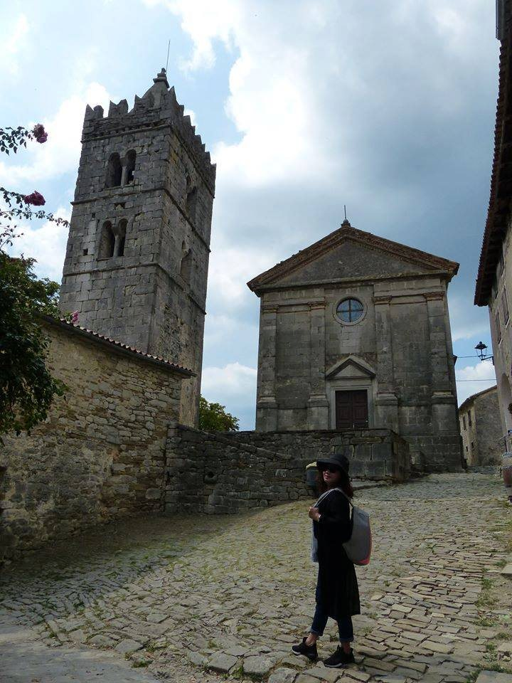
Poet
詩 · 池坊花道
一葉菩提
摘自〈喜歡這個黃昏〉
風中停下來
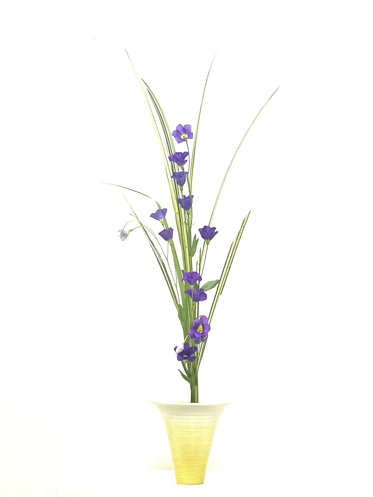
About
01學歷
臺東大學兒童文學研究所碩士。
02寫作
曾獲
曾入圍周夢蝶詩獎，詩作入選2025年臺北文學季公車捷運詩文。
散文詩選入《躍場－臺灣當代散文詩詩人選》．兒童文學作品曾輯入年度《臺灣兒童文學精華集》。
03著作
小說集
詩集
Poems
選自手稿原作
前往勒克瑙的迷途
天空
流露檸檬的蛋黃
田地剛種下馬鈴薯
大麥剛好青綠
我想擁有一粒種子
能為自己種些什麼呢？
噢，別怕，你已在這裡停下來
梵谷停下來
莫內停下來
野地和羊群叫卡拉瓦喬停下來
星月和米羅也趕路而來
莊稼開出三棵樹
樹冠撐起大傘，等雨
麥田的女人弓成一彎瘦月
男人從樹上掉下來
一群小孩從地上長出來
水塘的金箔偷偷剪裁影子
牛糞餅的炊煙
燃燒整座秋天
碎石子路浮浮沉沉，褪色的蘆花穿梭陰翳
亮起來，亮起來
街燈亮起來
一葉菩提
風中停下來

年輕的身影
走進來走出去，走出去走進來
血肉出了家門
光與暗滿與虛，嵌入楔子
十年前他是人，十年後他是僧
白日他是僧，黑夜他是人
摩卡壺滋滋敲響的早晨
繁花甦醒，陽光快遞著熱吻
太陽貼住我的耳際
說我棧居的屋子有鬼
總在深夜叨叨絮絮
想像Trieste的街道很叛逆
布拉風把你吹得滿城跑
腳步的形狀覆印雪的本色
種滿文字的舊書店
抒情了詩的自傳體
我棧居的屋子下了一整夜雨
晃蕩中綠色搖椅
啊！魅影
音節鏗然的義大利語
音浪一波又一波
穿破心臟的漣漪
我輕喚你的名
你的影子躲進太陽黑暗裡
可以徹夜不眠
和幢幢鬼影共舞嗎？
鬼迷心竅的苦難
成為無名之地的古今
噢！翁貝托•薩巴
垂垂老矣的靈
黑夜中
不朽的詩魂
註：翁貝托•薩巴（Umberto Saba，1883－1957）義大利詩人，出生於義大利的里雅斯特（Trieste）。1919年詩人的古今書店，現由後人經營。
童年，她追逐蝴蝶，抓在掌心看牠撲翅後沉睡。中年醒來，她的臉刺青著一隻蝴蝶，每一夜都是夢魘。
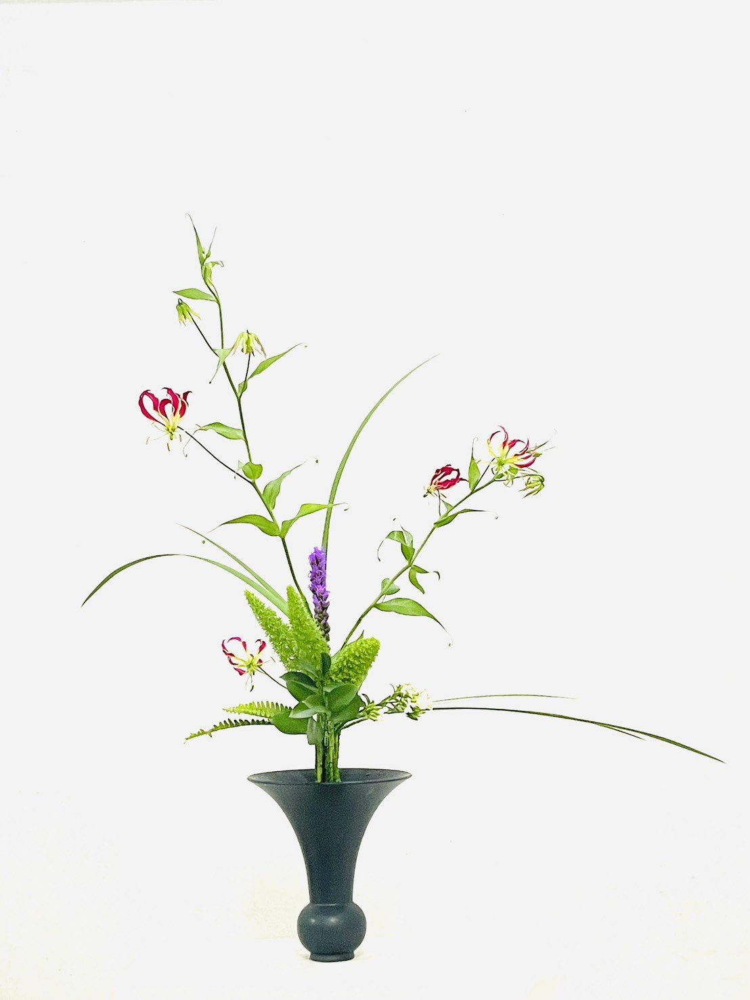
我殺了一隻長頸鹿，誰叫牠笑謔我膽小，牠忘了六米高的身長曾蜷曲在我的心臟取暖。我殺了一隻長頸鹿，牠馱著色盲的顏料嘲諷無光夜裡失明的我。我殺了一隻長頸鹿，牠反芻的胃裡無法容下草原裡自由的鼾聲。
我殺了一隻長頸鹿，用悲傷的眼睛。不，是牠自己，在我瞳孔裡。
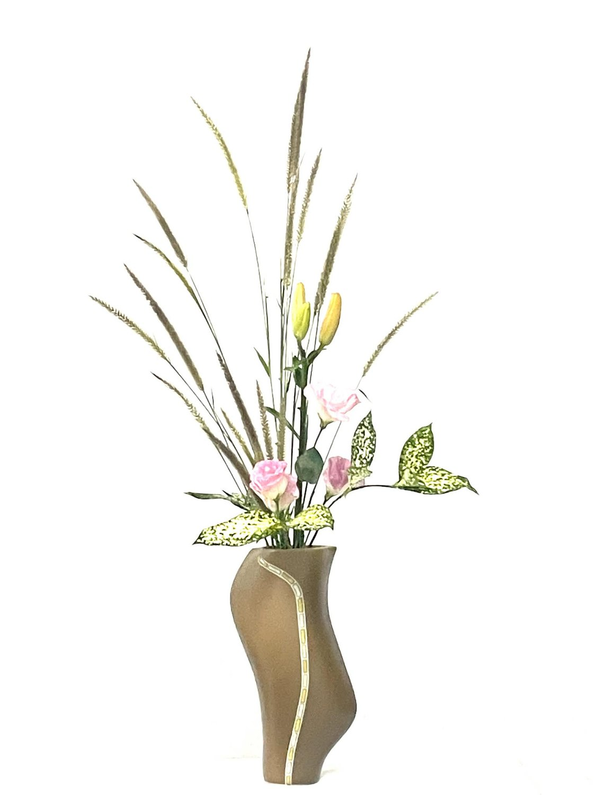
女人是不能玩火的，我靜靜聆聽遠處山頭低沉的宣禮聲在天未亮的湖面畫出漣漪。
關於那火，輕輕一劃就現出原形。點起菸，暖暖絕美星火，我把菸頭熨燙在牛奶色絲綢的布幔，一個洞，很多很多空洞。我再點一次火，獨立的火光，燎原我的頭巾，現出我的臉龐和波浪捲髮，火焰，燒著我的眼睛和身體，然後燃燒船屋。
再不逃就封城了。一葉扁舟浮沉沉，輕輕在黑暗裡滑過達爾湖的藍，喜馬拉雅山的雪白，但，世界一點也不清澈。我逃出城門，回頭，昨天走過的街道煙硝瀰漫，那些戴頭巾的女人和孩子們的眼睛繼續在火中竄逃，像一朵朵沉重小花。
驟雨後。他們停在一口古井，荒野中，它睡多久？枯涸了嗎？好奇的孩子丢進一顆石頭，試探深不見底的水源，半晌，那口井喑啞回聲。男子的眼睛暗潮，瀕危的老父喉嚨間發出的也是這種低沉迴音，男子用口盛裝他的方言，只剩下搖搖欲墜的隻字片語，「The wishing well! The wishing well!」這時，那無邪的孩子語音正盛放。
他的父親離家很久很久，滂沱大雨流逝了母語。
這隻小蟋蟀正演奏歌曲，那隻小蟋蟀跟著歌唱，這隻小蟋蟀練習跳高，那隻小蟋蟀預備跳遠。噓，孩子，安靜一點，草叢裡有芳鄰。
那隻蟋蟀愈跳愈起勁，這隻蟋蟀愈唱愈響亮。放任的鳴蟲啊，你的惡聲擾鬧了。
蟋蟀噤聲，四處張望寬闊的天空。一群蝗蟲肆意過境，歇斯底里的噪音鋪天蓋地。
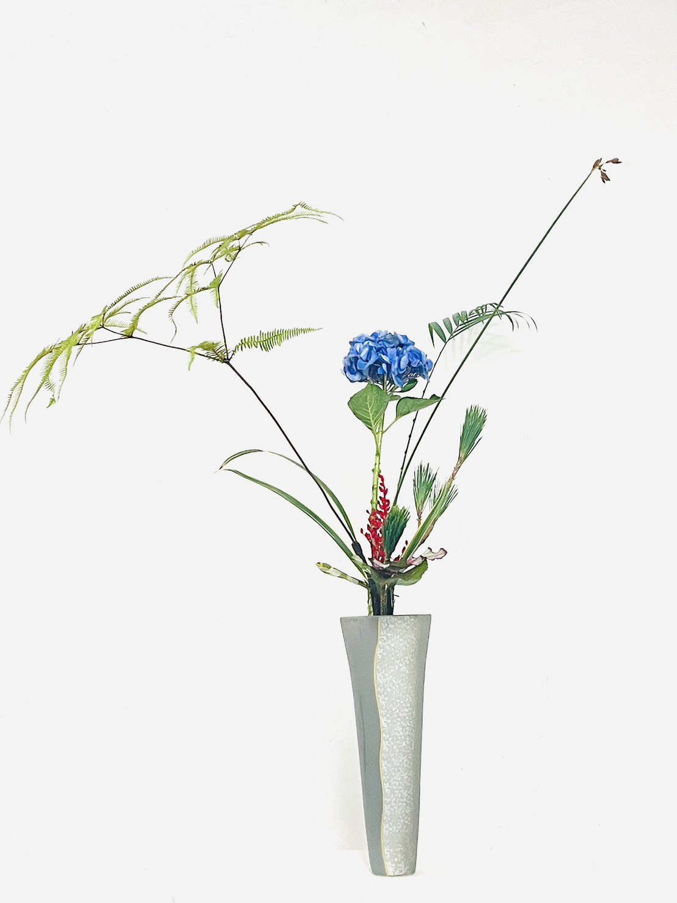
我們共居海島。
白日時分居。妳露出海面的珊瑚島，他走進崎嶇火山島，我在沉積島。
夜黑時同居。他佔據大廳妳躲入臥室我在私廚。我涉越一座戰場，槍林彈雨屍橫遍野的殺戮，走過一條小胡同，盡頭聳立終年積雪的少女峰，怯步，端詳深不可測的冰河，寂寞的山椒魚冷冷抓住我尾巴，往無浪的中島泅渡。
中島構思日光，消瘦的陶瓶，凋落小黃花，一朵朵畸零小島，海上，悄悄升起月光。
一、生
起心動念，建構你的質地你的紋理，你的感官你的意識。
一切新生，新軀殼新格局，新人新器新物，我們存在，我們共生。
種子在這裏。風聲起水聲起人聲起。
二、住
成為泥土成為容器成為港灣。
供養晨昏供養四季供養你的名字，心安住身安住，目之所及，都是此時此刻。
眾聲喧嘩長出一朵花。愛生起憎生起煩惱也生起。
三、異
鋒利挺直的城牆，被一把銳不可擋的秋風，剪開。
眸光不過輕轉，你走過很遠的路，不留餘地變異樣貌。雪花剝落的胸肌搖晃，體膚龜裂的河溝游弋呀，千番風雨不辭的窗几，蜷曲，一種靜態，一種空無。
盛開的繁花，終將落土，練習離別。
四、滅
渴望是陷阱，一隻飛蛾竄入餘光。
所有現在，都成為過去，世間萬物雲煙起，欲墜的形骸待價而沽，遙遙無期等候都更。
這一天，終究來臨了。堅持一輩子的屋牆，瞬間崩塌，空中碎裂的回聲，讓路給春風。
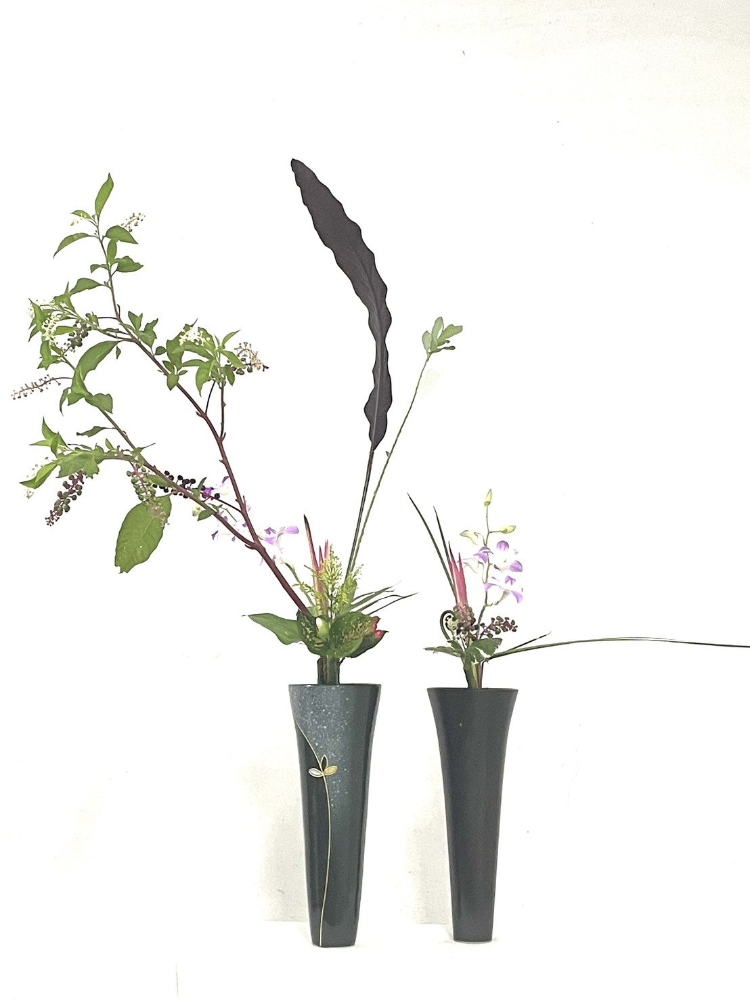
IKENOBO
池坊 · 留白
少量的花，大量的空白。池坊花道取當季的花與枝，在枝與花之間留下可以呼吸的空隙。少，於是成為多。
同一瓶裡，有花苞，有盛開，也有枯枝。從萌發看到凋零，是對生命的敬意，也是侘寂的所在。
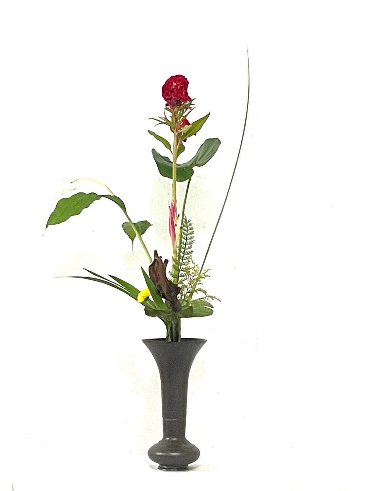
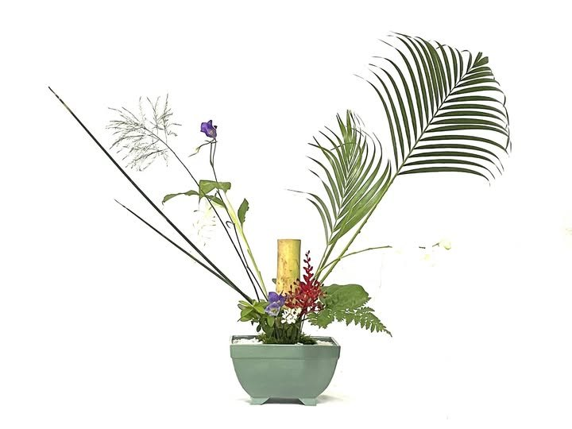


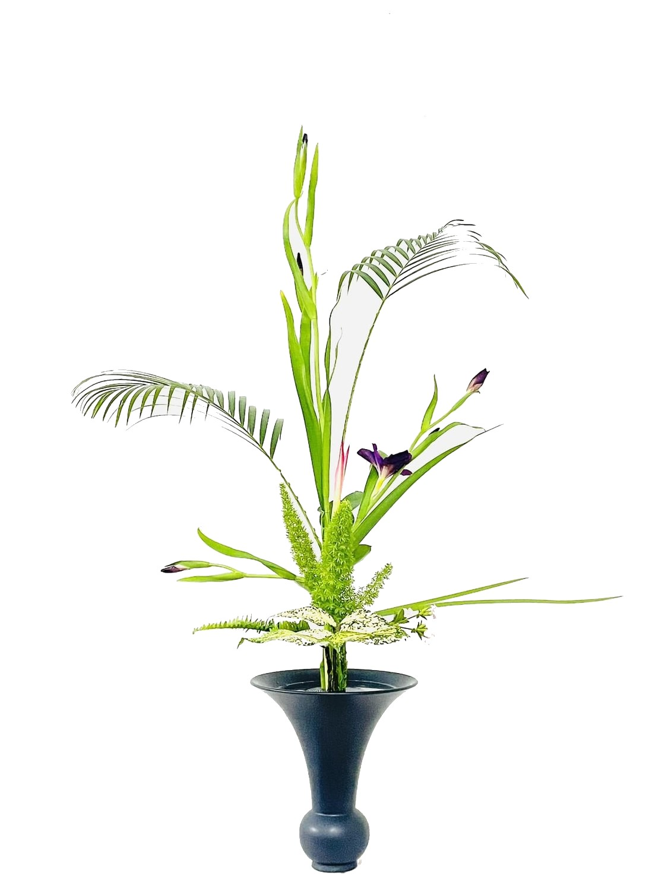
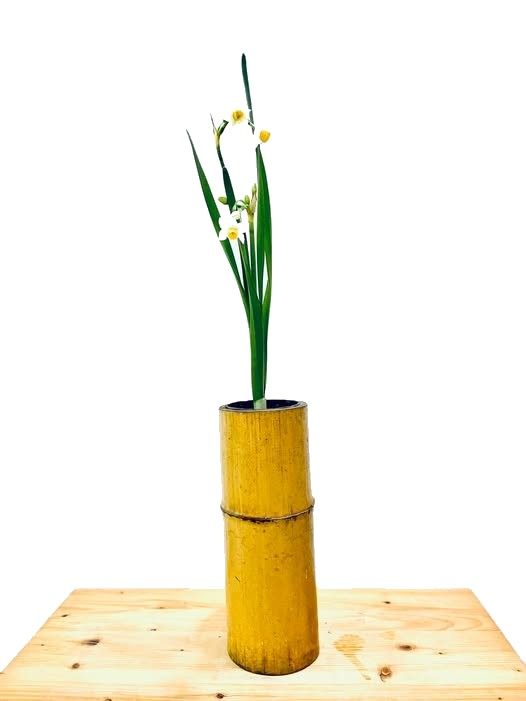
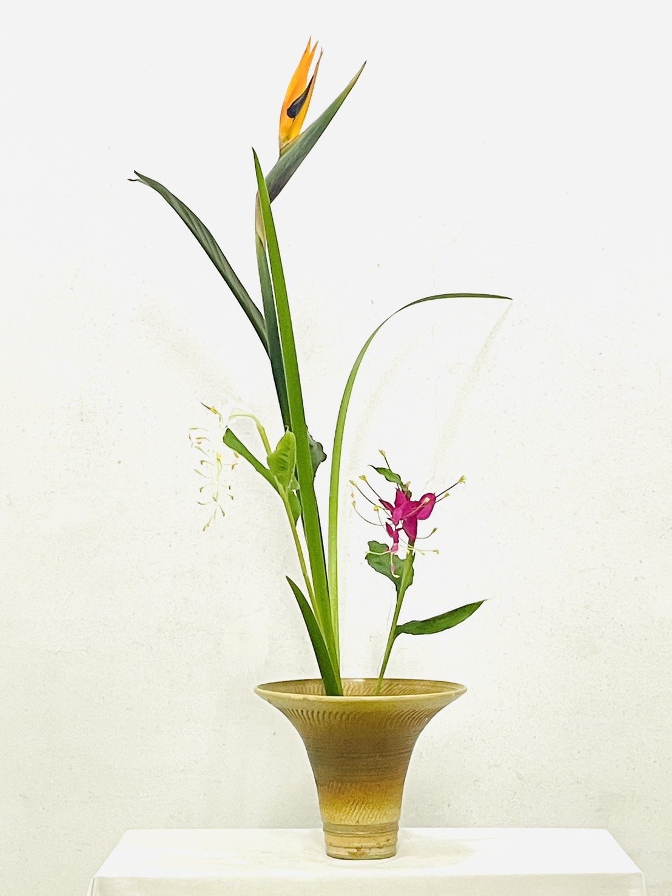
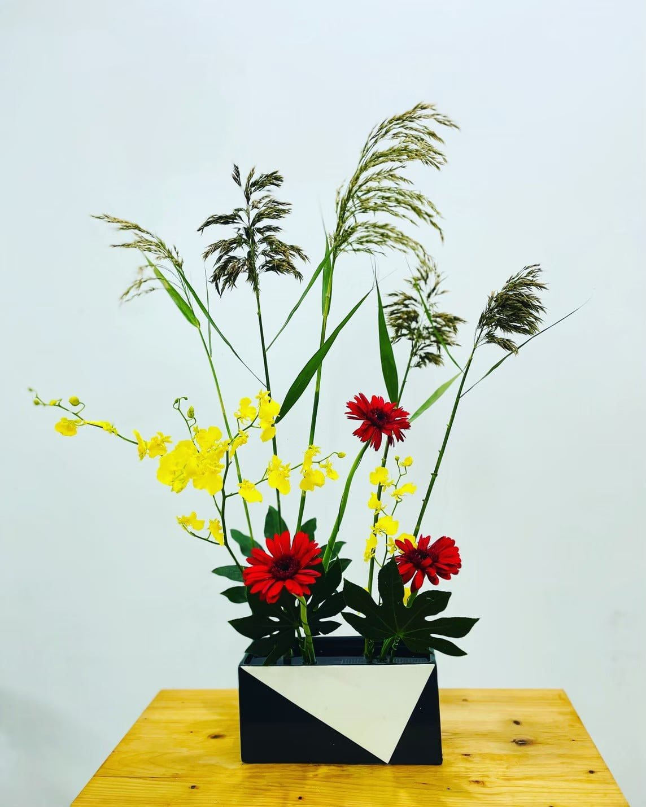
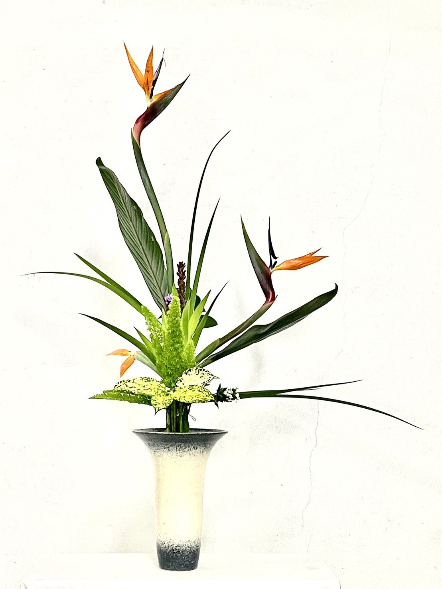
01 / 09